CIVICFLOW AI
AI-Powered Civic Grievance Intelligence & Emergency Response Platform
“From Citizen Voice to Action — Faster, Smarter, More Transparently.”
67UHS3)
• Vajja Aravindh (Lead):
vajjaaravindh@gmail.com (Full-Stack & AI Architecture)• Vatsavai Venkatasai Devavarshita:
devavarshita2311@gmail.com (UI/UX & Mapping)• Makka Siva:
sivamakka14@gmail.com (Backend & Data Pipelines)
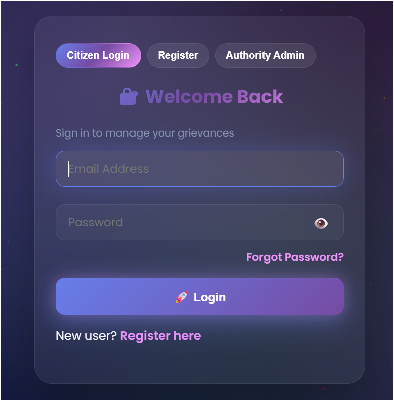
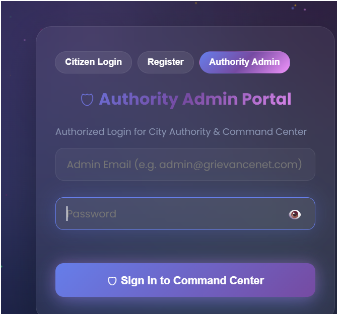
Civic Resolution Bottlenecks in Urban India
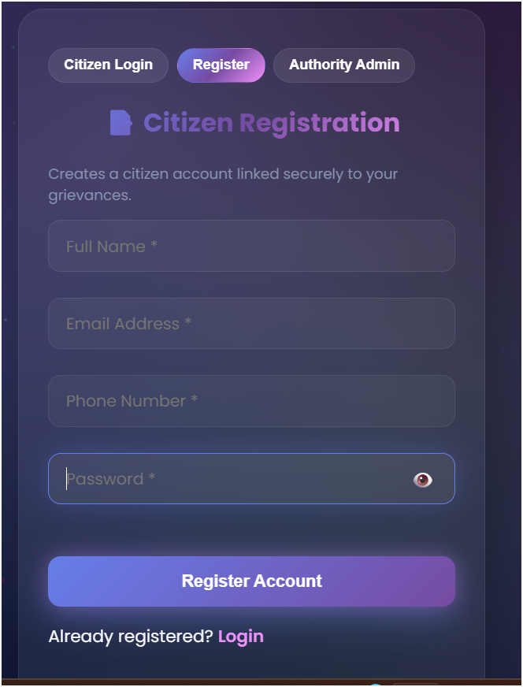
CivicFlow AI — Citizen Intake Hub
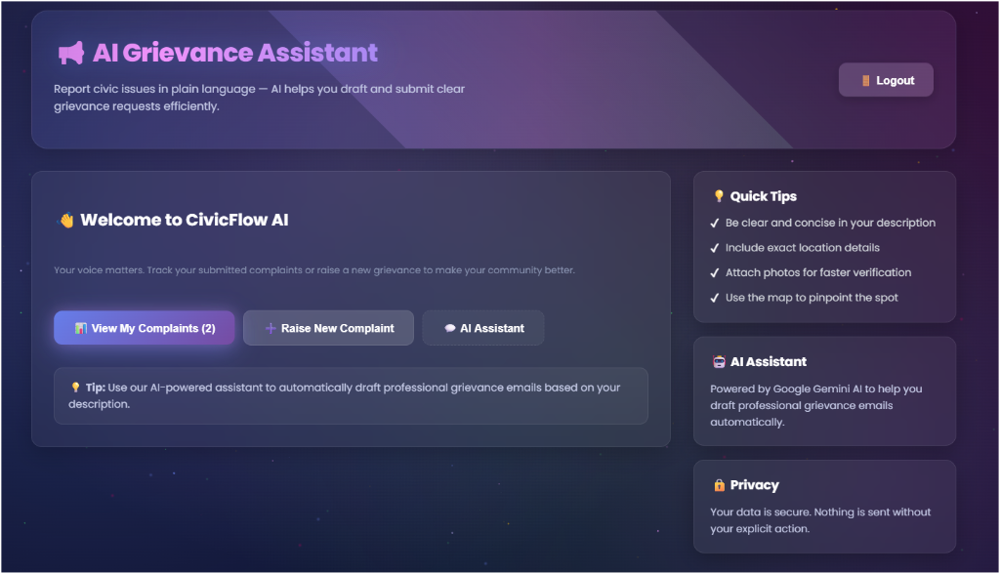
Complaint Submission & AI Analysis
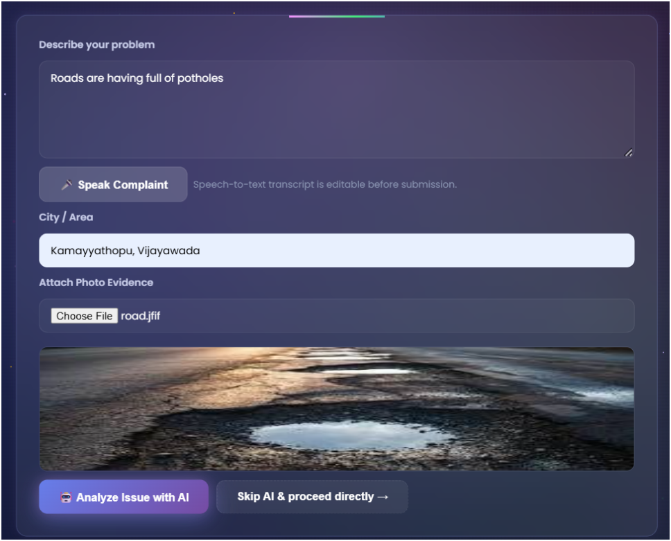
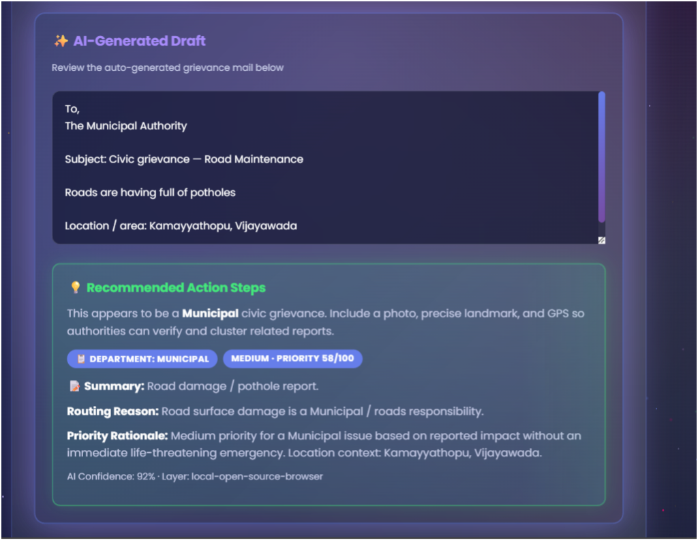
Processing Pipeline Details
On-Device NPU + Hybrid Cloud AI Engine
CivicHashNgram-128 executes locally on phone hardware (Snapdragon NPU). Performs N-gram lexical scoring and emergency triage in 0ms offline.
Creative Phone Use & Office Kit Bridge
📱 Creative Phone-First Intake
- • Voice Dictation: Native Speech Recognition API in Indian English accents.
- • Camera Hardware: Direct camera capture with 1280px client-side canvas compression.
- • GPS Geolocation: Single-tap OpenStreetMap reverse geocoding to pinpoint coordinates.
💻 Office Kit Phone-to-Laptop Bridge
- • Screen Mirroring: Live pitch & command monitoring via Office Kit.
- • Clipboard Sharing: Instant transfer of generated grievance reports across devices.
- • Remote Command Control: Operators audit phone field reports directly from laptop desks.
112 Emergency Protocol & Real-Time SLAs
Detects life-threatening events (sparking transformers, structural collapse, armed violence, medical emergencies) and injects a prominent 112 direct call action button.
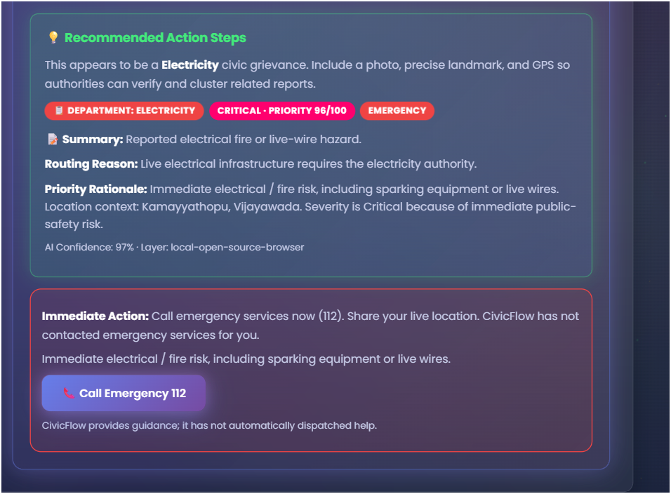
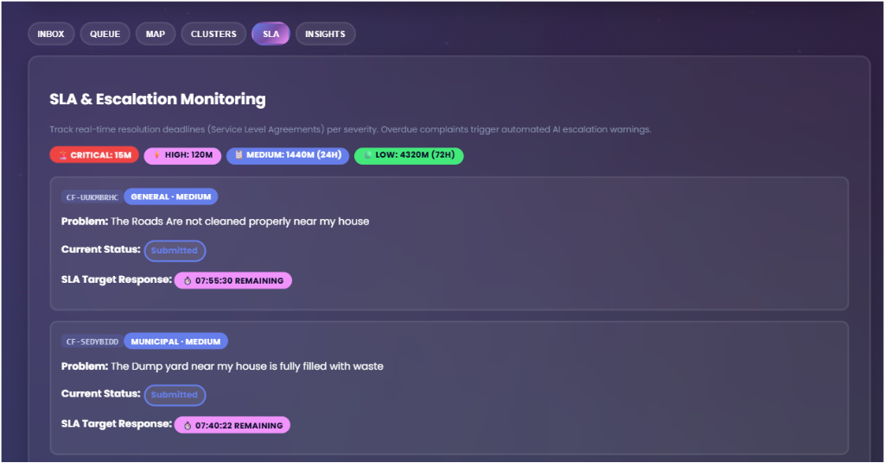
450m Radius Hotspots & Cosine Duplicates

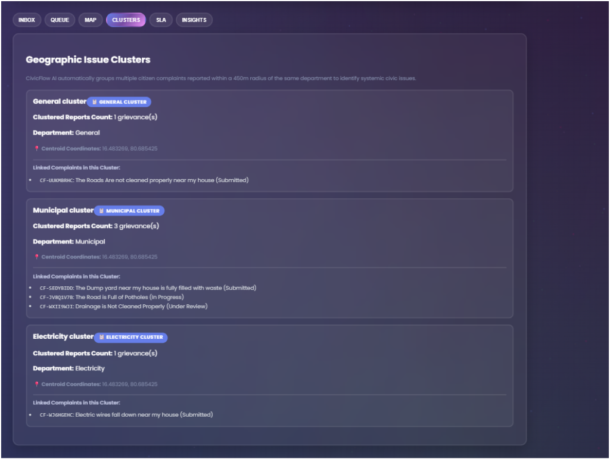
Authority Action Queue & Dashboard
Submitted ➔ Under Review ➔ In Progress ➔ Resolved.
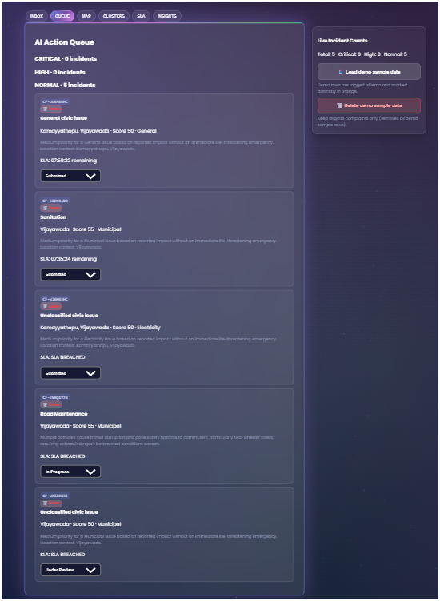
My Complaints & 5-Step Timeline Modal
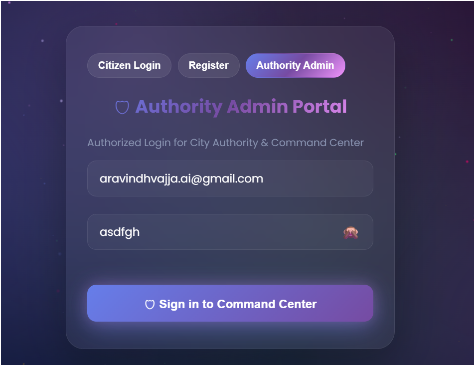
5-Step Grievance Status Timeline Modal (`https://civicflow-ai-b2144.web.app/`)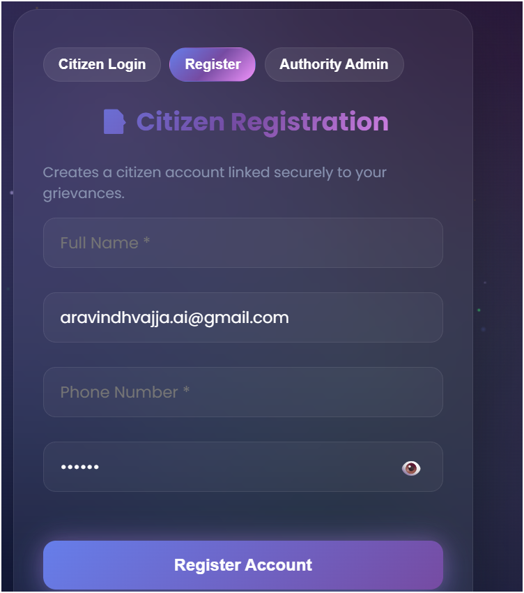
deviceId.
Submitted ➔ Under Review ➔ Assigned ➔ In Progress ➔ Resolved.
Authority AI Executive Insights
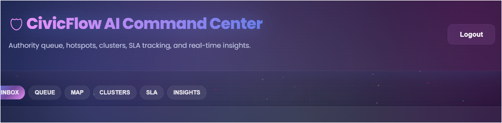
Production Environment & IPv4 SMTP Engine
SENDER_EMAIL (civicflow.grievance.ai@gmail.com) & App Passwords.
IPv4SMTP and IPv4SMTP_SSL wrappers with strict TLS certificate verification.
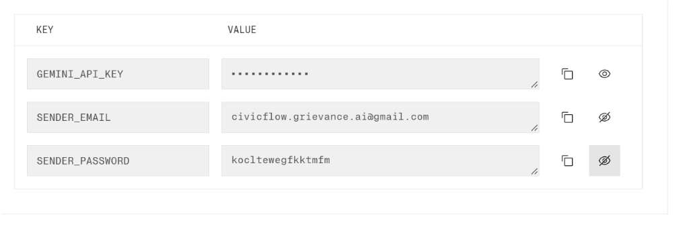
Dynamic Formal Email Generation Engine
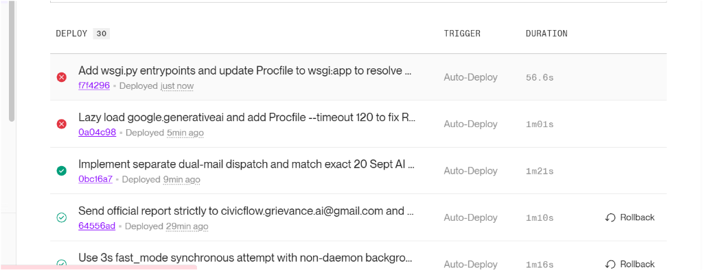
Dual-Email Dispatch & Non-Daemon Handoff
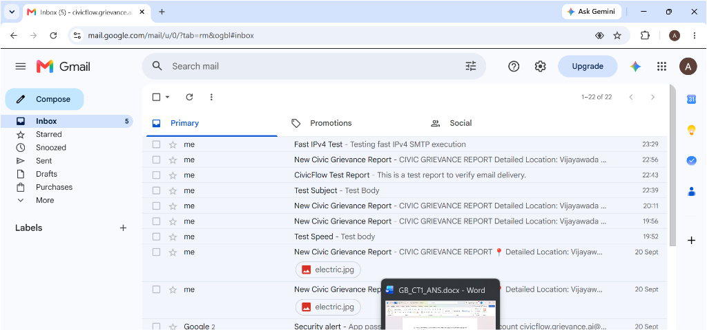
Dynamic Location Fallbacks & Google Maps URLs
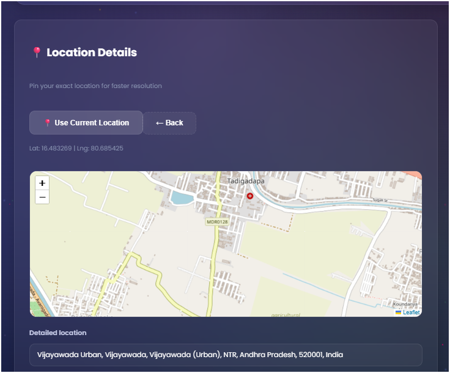
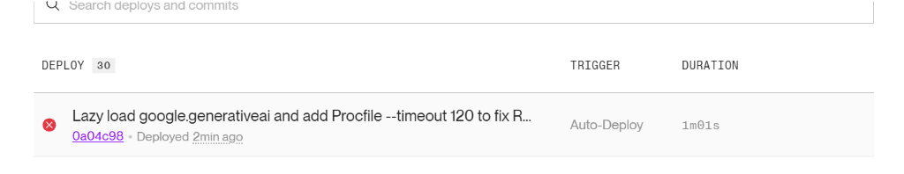
Indian English Speech-to-Text & Canvas Compression
🎙️ Native Web Speech API (`en-IN`)
Allows citizens to speak their grievance naturally in Indian English accents. Real-time interim transcript rendering fills the intake text area automatically.
🖼️ HTML5 Canvas Image Compression
Compresses heavy camera photos (5MB+) down to 1280px WebP/JPEG binaries client-side before upload, saving 90% cellular data usage in remote areas.
TeamGaneshaa · iQOO Scoring Breakdown
🎯 Official Scoring Criteria Alignment
- • End Product Quality (30%): Production platform deployed live on Firebase & Render.
- • Novelty & Impact (20%): Instant 112 emergency routing & 450m geographic clustering.
- • Creative Phone Use (15%): Indian English speech-to-text, camera compression, GPS mapping.
- • Technical Depth (15%): Snapdragon NPU offline model + Gemini Flash hybrid AI engine.
- • Office Kit (10%): Field report intake mirrored directly to laptop command desk.
👥 Team Roster & Roles
Vajja Aravindh (Leader)
vajjaaravindh@gmail.com · Full-Stack & AI Architecture
Vatsavai Venkatasai Devavarshita
devavarshita2311@gmail.com · UI/UX & Geospatial Mapping
Makka Siva
sivamakka14@gmail.com · Backend & Data Pipelines
CIVICFLOW AI
From Citizen Voice ➔ Action
Thank You!
TeamGaneshaa · iQOO City Battles 2026 · Hyderabad Battle 04